Print-ready A4 landscape. Filter the on-screen collection, use the navigation bar, or print the complete thirteen-page pack. Set browser margins to None and enable background graphics if offered.
Science LundyLoop poster
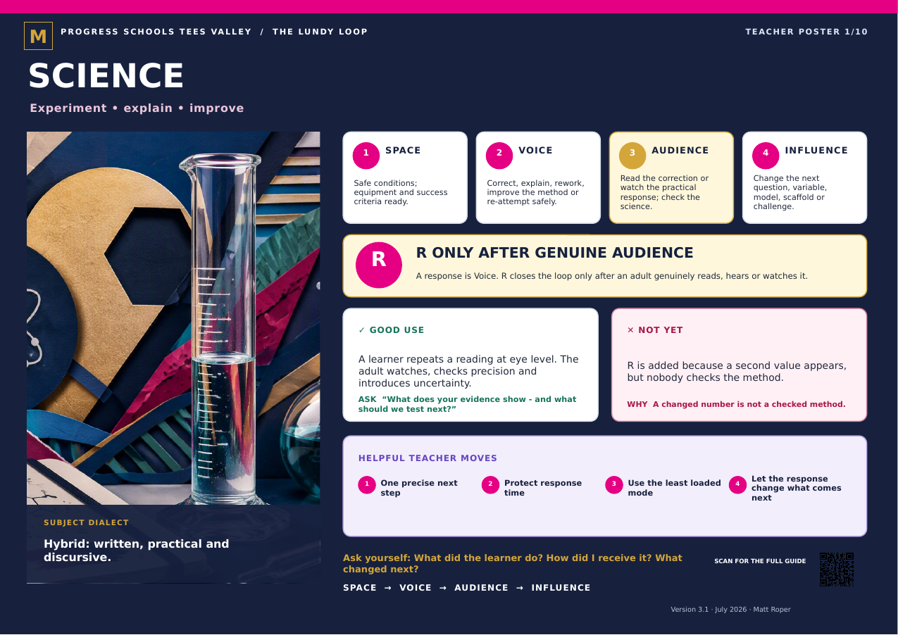
English LundyLoop poster
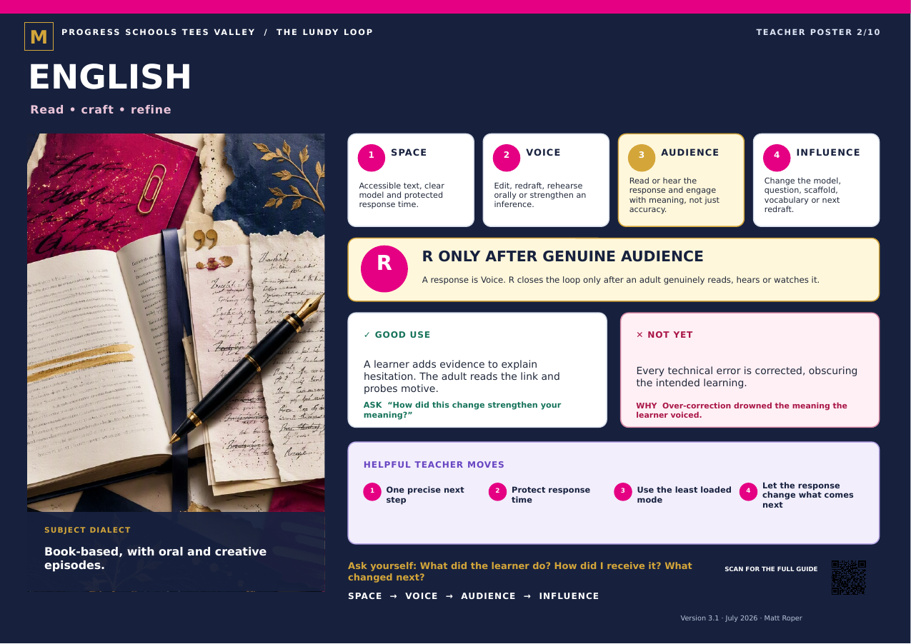
Mathematics LundyLoop poster
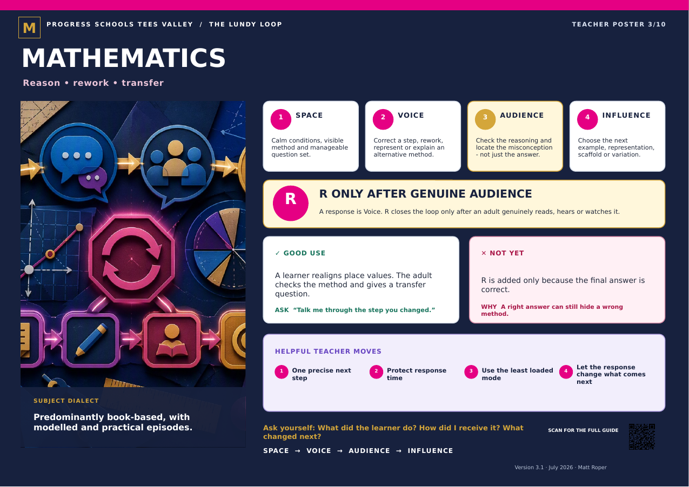
Humanities LundyLoop poster
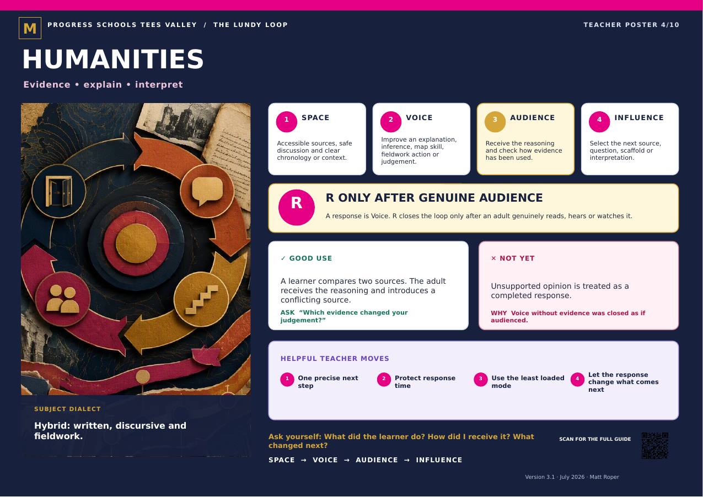
PE & Outdoor Education LundyLoop poster
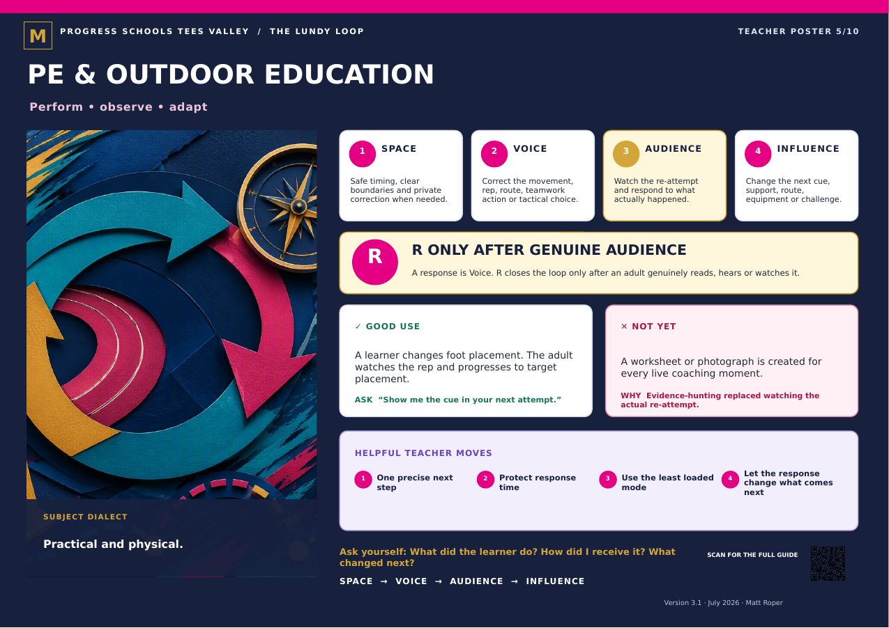
D&T & Food LundyLoop poster
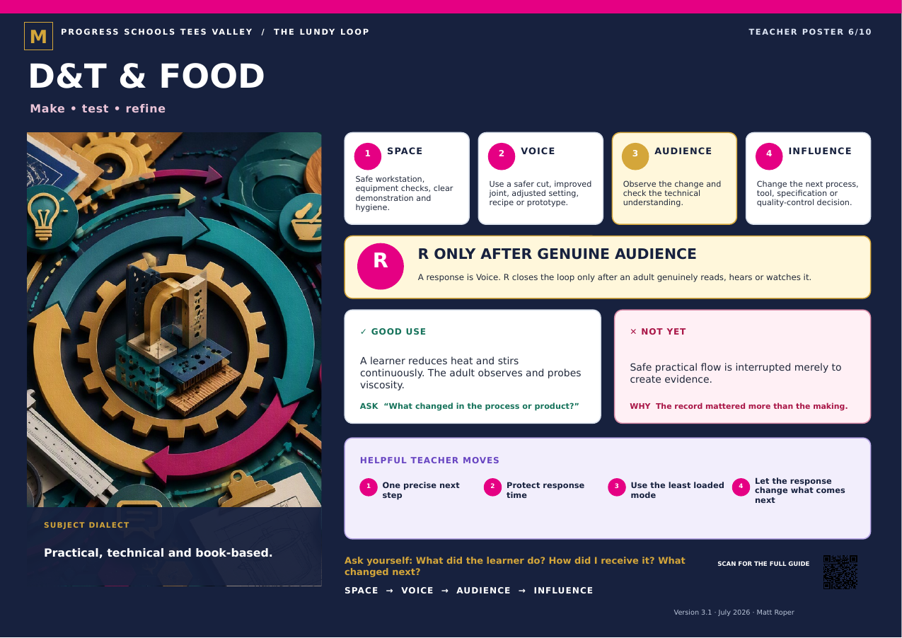
Art LundyLoop poster
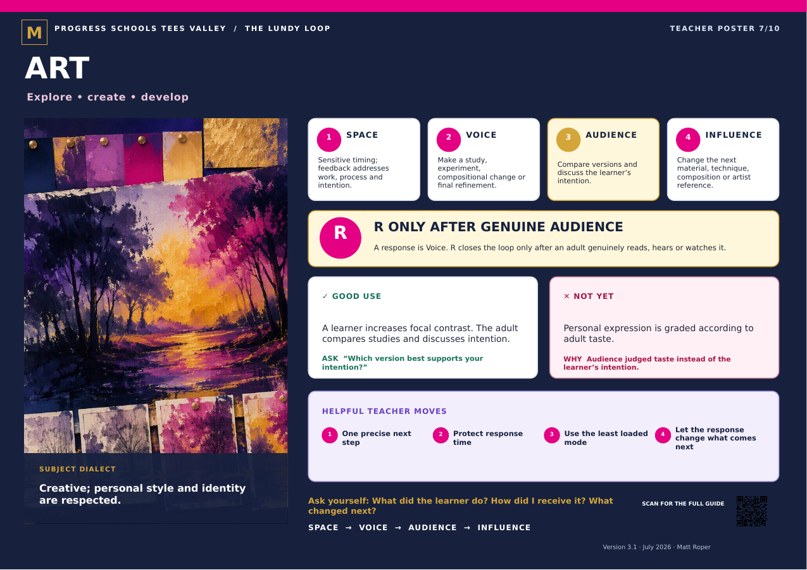
Music & Drama LundyLoop poster
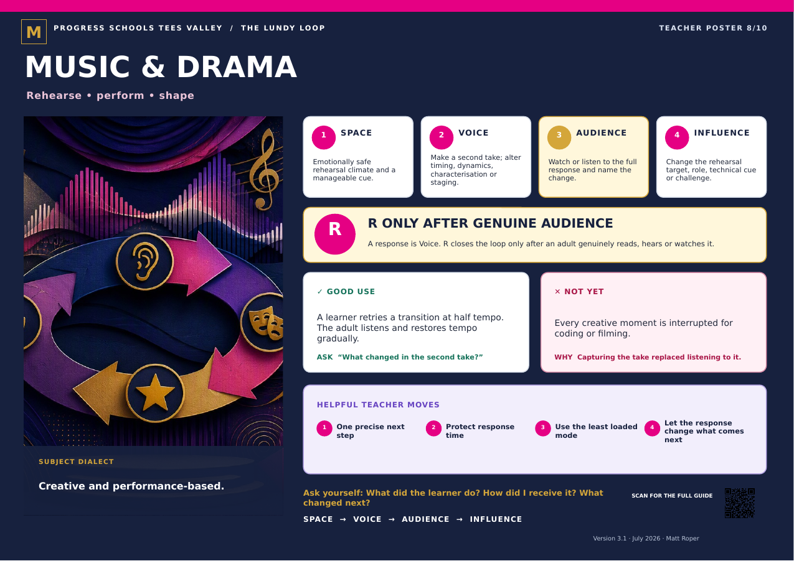
PSHE & RSHE LundyLoop poster
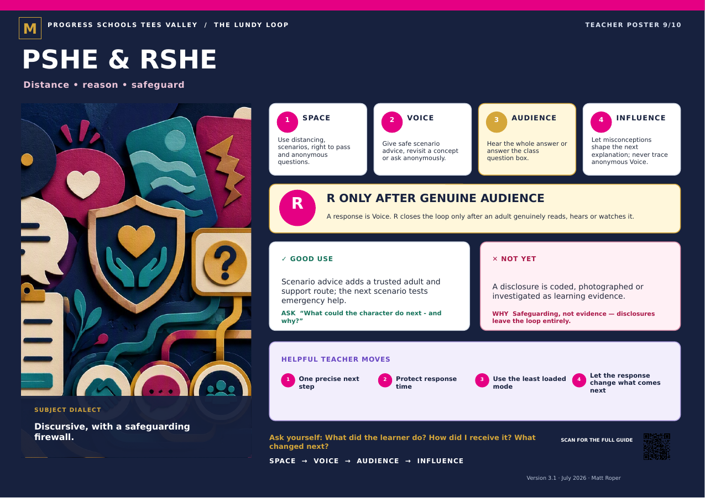
RE & Citizenship LundyLoop poster
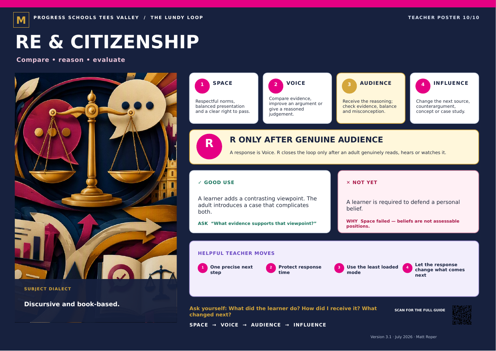
BUILD — I Can Show My Learning LundyLoop poster
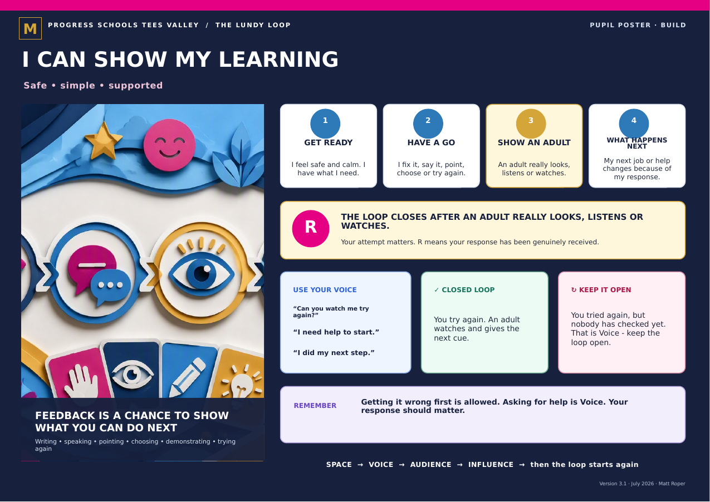
GROW — I Own My Feedback LundyLoop poster
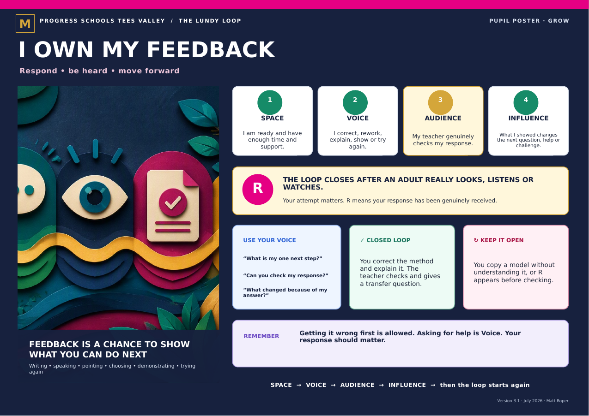
LAUNCH — Turn Feedback Into Progress LundyLoop poster
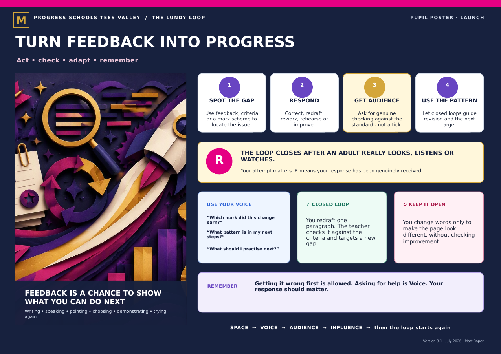